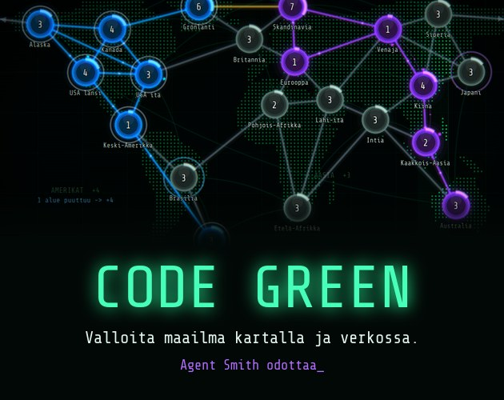

Strategiapeli selaimessa
Ilmainen vuoropohjainen strategiapeli kahdella rintamalla. Kartalla valloitat 21 aluetta nopilla, ja kartan alla käydään verkkosotaa merikaapeleita pitkin. Vastassa on Agent Smith, joka kommentoi siirtojasi terminaalissa.

Joukkoja tulee joka vuoro alueiden, maanosien ja runkoverkkojen mukaan.
Valitse oma alue ja viereinen vihollinen. Hyökkääjä heittää enintään kolme noppaa ja puolustaja kaksi. Tasapeli on puolustajan.
Hakkeroi solmuja kaapelia pitkin palomuurien läpi. Kun hallitset verkkoa alueella, vihollisen joukot heittävät nopan vähemmän.
Siirrä joukkoja omien alueiden välillä kerran vuorossa. Sitten Smith pelaa siirtonsa kartalla näkyvästi.
Klassinen maailmanvalloitus: maanosabonukset, noppataistelut ja joukkojen siirrot.
Hakkeroi, rakenna palomuureja, skannaa vihollisen puolustus ja kaada se DDoS-iskulla. GLITCH piilottaa joukkomääräsi kahdeksi vuoroksi.
Kummallakin puolella on salainen tehtävä, joka astuu voimaan vuorolla 8. Voitto voi tulla yllättäen.
Jos pidät maailmanvalloituksen lautapeleistä ja vuoropohjaisista strategiapeleistä, Code Green tuo niihin uuden kerroksen: kyberhyökkäykset vaikuttavat suoraan taisteluihin kartalla. Opetuspeli ohjaa ensimmäisen vuoron, ja Agent Smithiä vastaan voi pelata helpolla, normaalilla tai vaikealla tasolla.
Kaksinpelissä kaksi pelaajaa pelaa samalla koneella, ja vuoron vaihtuessa ruutu peittyy, ettei toinen näe salaisia tietoja.
Ei. Peli toimii suoraan selaimessa tietokoneella. Puhelimella peli lisätään kotinäytölle, jolloin se aukeaa koko näytölle vaakatasoon.
Voi. Kaksinpelissä kaksi pelaajaa pelaa samalla koneella vuorotellen.
Omista kaikki 21 aluetta tai suorita salainen tehtäväsi, joka on voimassa vuorosta 8 alkaen.
On. Opetuspeli ohjaa ensimmäisen vuoron, ja Agent Smithiä vastaan voi pelata helpolla, normaalilla tai vaikealla tasolla.
Peli alkaa heti selaimessa, ilman latausta ja tunnuksia.